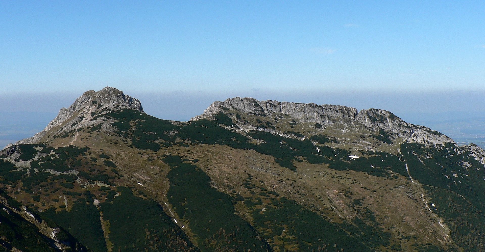
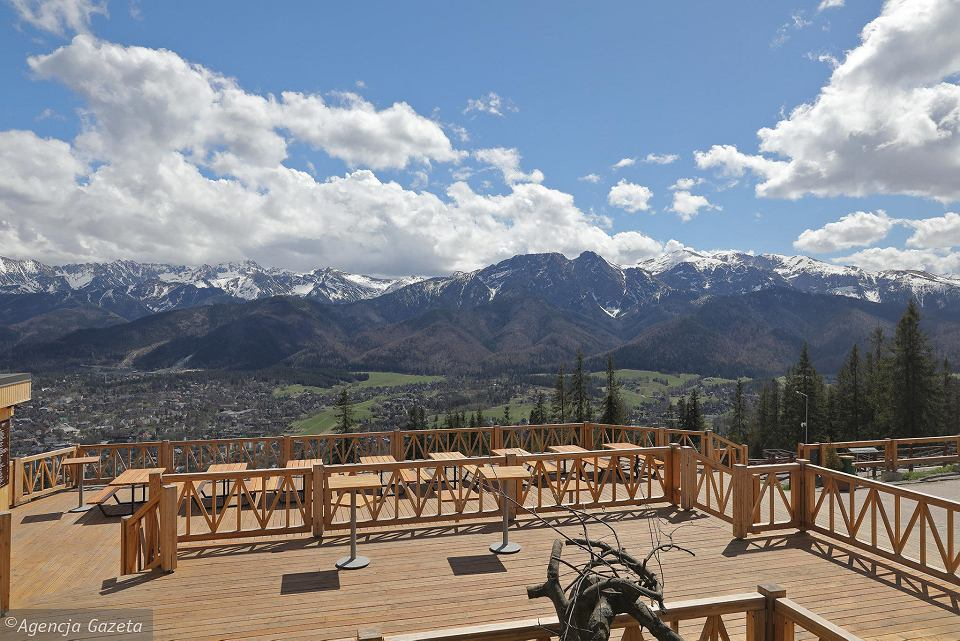
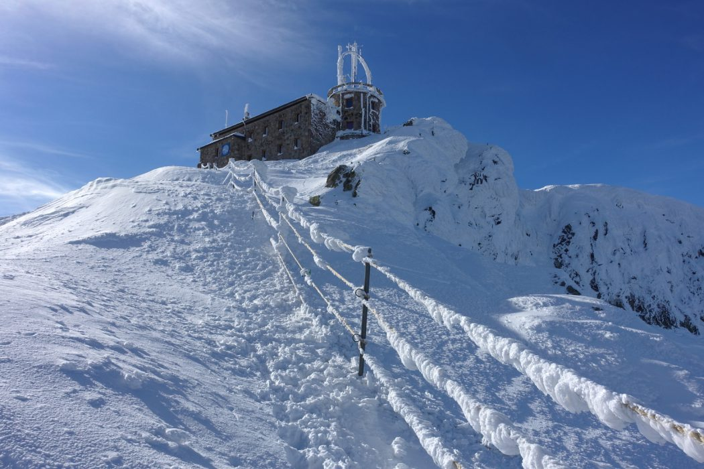
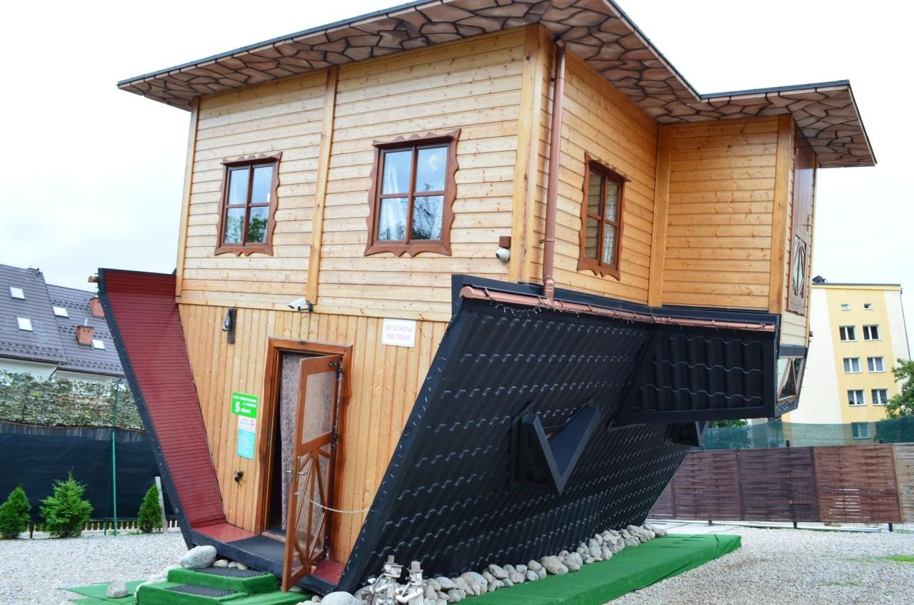
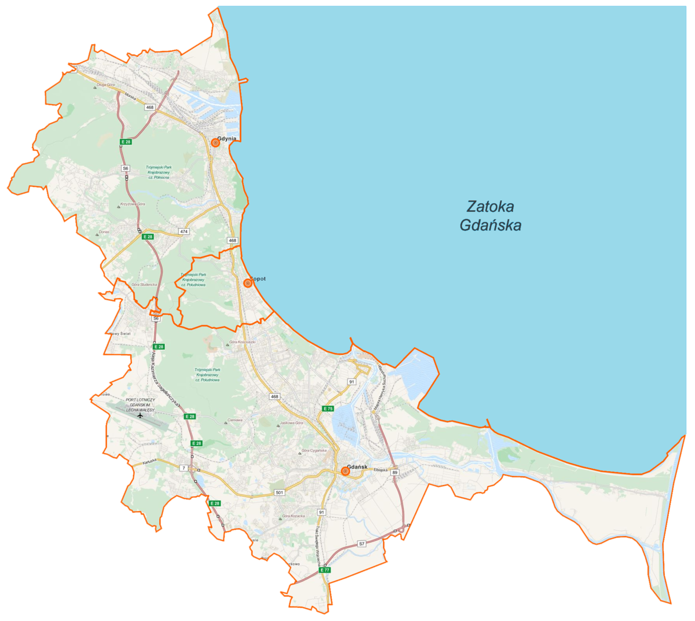
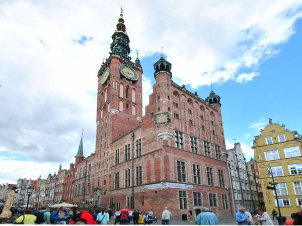
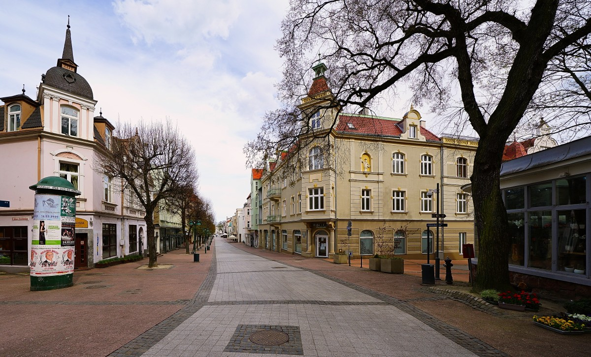
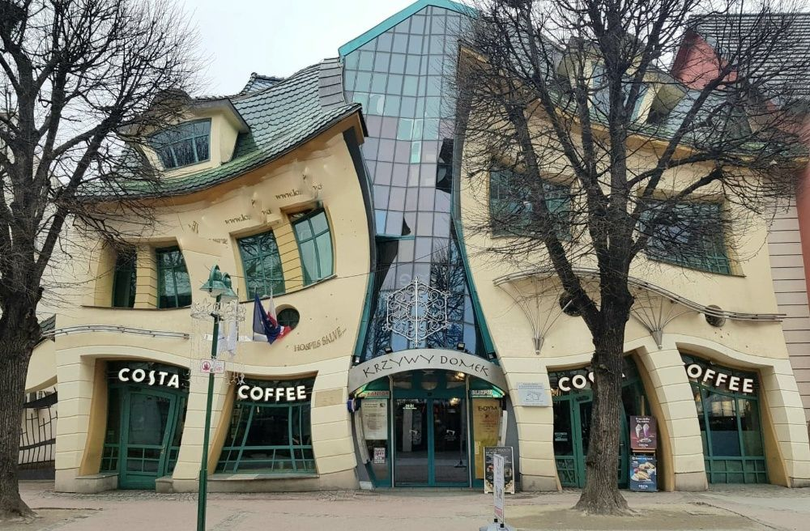
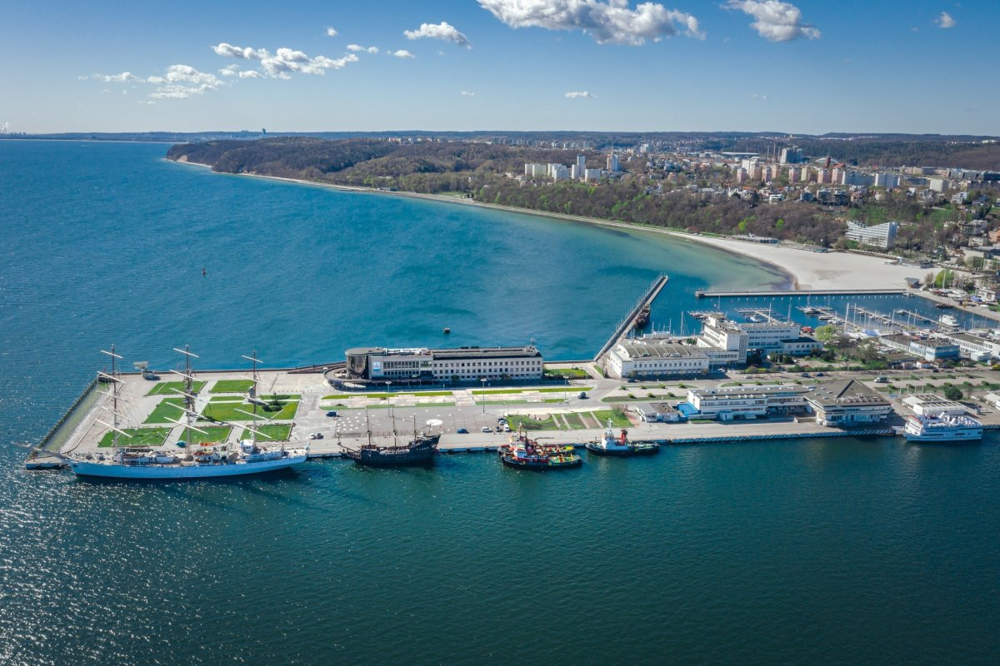
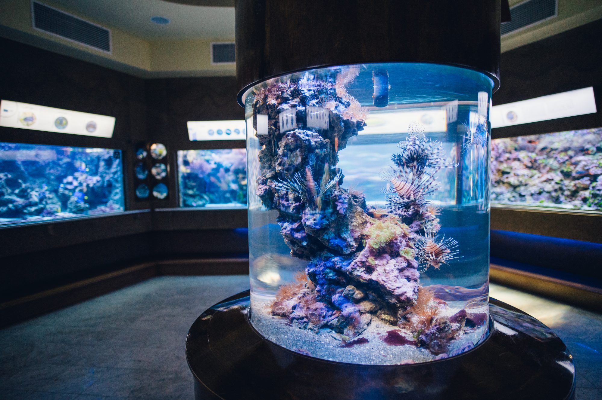

ZAKOPANE
Zakopane na mapie Polski
Zakopane znajduje się 310 kilometrów od Radomia. Najszybszą trasą jest droga ekspresowa S7 oraz droga krajowa DK7.
Podróż zajmuje około 4 godziny.
Atrakcje
|  | Giewont to góra-symbol, której zarys kojarzony jest z sylwetką śpiącego rycerza. Jedna z wersji legendy o rycerzach śpiących pod Tatrami, którzy obudzą się, gdy Polska znajdzie się w wielkim zagrożeniu, umiejscawia ich właśnie pod Giewontem. Związane jest to z licznymi w ścianach Giewontu jaskiniami |
|  | Gubałówka to podłużne wziesienie na Pogórzu Gubałowskim. Ma wysokość od 1120 metrów na wschodnim końcu do 1129 metrów na zachodnim końcu. Nazwa Gubałówka pochodzi od znajdującej się na niej polany Gubałówka, tej zaś od nazwiska Gubała. |
|  | Kasprowy Wierch jest szczytem w Tatrach Zachodnich o wysokości 1987 metrów. Nazwa Kasprowy Wierch pochodzi od leżącej u podnóży szczytu Hali Kasprowej, a ta z kolei według podań ludowych od imienia lub przezwiska jej właściciela górala Kaspra. Zbudowany jest ze skał krystalicznych, mimo położenia w młodszej części Tatr zbudowanej ze skał osadowych. Należy bowiem do wyspy krystalicznej Goryczkowej. |
|  | Domek postawiony do góry nogami jest atrakcją Zakopanego, którą w pierwszej kolejności powinni odwiedzić stali bywalcy miasta Domek powstał w 2010 roku, chociaż swoją architekturą udaje projekt znacznie starszy, wpisany w górskie klimaty. Przed wejściem stoi tabliczka, która mówi, że osoby z chorym błędnikiem, gdyż przechodząc przez poszczególne pomieszczenia naprawdę może zakręcić się w głowie. |
TRÓJMIASTO
Trójmiasto na mapie Polski
Trójmiasto położone jest 450 kilometrów od Radomia. Podróż zajmuje do 5 godzin.
Atrakcje
 |
GDAŃSK | Twierdza Wisłoujście ma już ponad pięćset lat. Zbudowany został według wzorów holenderskich, ale o jego unikatowym charakterze stanowi różnorodność stylów architektonicznych nawarstwiających się na przestrzeni wieków. |
|  | GDAŃSK | W ratuszu Głównego Miasta mieści się Muzeum Gdańska. Na ratuszu nad portalem znajduje się niepoprawny herb miasta z dwoma lwami podtrzymującymi tarczę. Łeb jednego z nich zwrócony jest w kierunku Bramy Złotej. Według legendy lew ten zwrócił wzrok w kierunku, z którego spodziewano się przybycia polskiego króla. |
|  | SOPOT | Po 1945 roku dawną Morską zmieniono na Bohaterów Monte Cassino, nazwa ta, jako zbyt długa skrócona została do "Monte Cassino", a zaraz potem uproszczona do "Monciaka". Przez cały okres powojenny Monciak był reprezentacyjną ulicą Sopotu. |
|  | SOPOT | Domek został zbudowany według projektu architektów Szotyńskich i Zaleskiego, którego inspiracją były rysunki Jana Marcina Szancera i Pera Dahlberga. Obiekt stanowi część Centrum Handlowego „Rezydent”. Na parterze mieszczą się pomieszczenia handlowe, lokal gastronomiczny, bary, sushi, kawiarnia Costa, salon urody i modelowania sylwetki Body Shape Garden oraz salon gier. |
|  | GDYNIA | Skwer Kościuszki to jedno z ulubionych miejsc spacerów i wycieczek zarówno turystów, jak i mieszkańców Gdyni, a także miejsce wielu koncertów, festynów i innych imprez. Największą atrakcją są dla wszystkich na pewno cumujące przy nabrzeżu zabytkowe okręty i statki żeglarskie. Warto zwiedzić polski niszczyciel ORP Błyskawica oraz najsłynniejszy polski żaglowiec Dar Pomorza |
|  | GDYNIA | Akwarium Gdyńskie jest niezwykłym miejscem w centrum miasta. Można tu zobaczyć niezwykłe gatunki ryb, płazów i gadów pochodzących z różnych rejonów świata, np. z Afryki, Ameryki Północnej czy północy naszego kontynentu. Niezwykłe poruszenie wśród zwiedzających wywołują także rekiny, węgorze elektryczne, najmniejszy krokodyl świata krótkopyski oraz zaskakujące umiejętnością kamuflażu szkaradnice. |